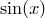
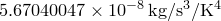

plot [3d] [item <id>] [{<range>}] ( '<filename>' | <function> )
[axes <axes>] [every <expression> {:<expression>}]
[index <value>] [select <expression>]
[label <string expression>]
[title <string>] [using <expression> {:<expression>}]
[with {<option>}]
The plot command is used to produce graphs. The following simple example would plot the sine function:
plot sin(x)
Ranges for the axes of a graph can be specified by placing them in square brackets before the name of the function to be plotted. An example of this syntax would be:
plot [-pi:pi] sin(x)
which would plot the function  between  and  .
.
Datafiles may also be plotted as well as functions, in which case the filename of the datafile to be plotted should be enclosed in either single or double quotation marks. An example of this syntax would be:
plot 'data.dat' with points
which would plot data from the file data.dat. Section 3.8 provides further details of the format that input datafiles should take and how Pyxplot may be directed to plot only certain portions of datafiles.
Multiple datasets can be plotted on a single graph by specifying them in a comma-separated list, as in the example:
plot sin(x) with colour blue, cos(x) with linetype 2
If the 3d modifier is supplied to the plot command, then a three-dimensional plot is produced; many plot styles then take additional columns of data to signify the positions of datapoints along the  -axis. This is described further in Chapter 1. The angle from which three-dimensional plots are viewed can be set using the set view command.
-axis. This is described further in Chapter 1. The angle from which three-dimensional plots are viewed can be set using the set view command.